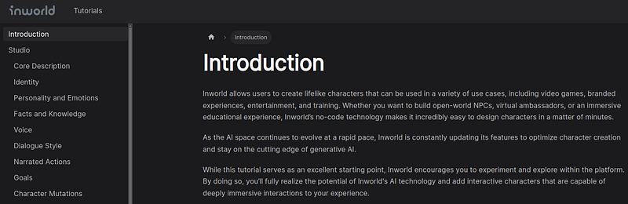
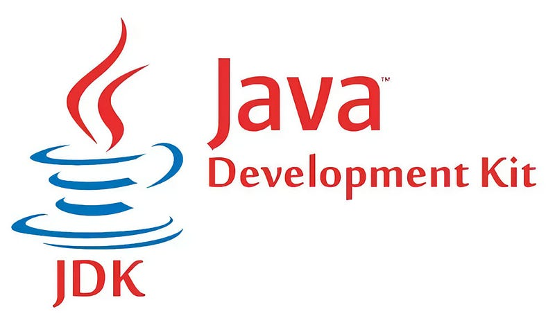
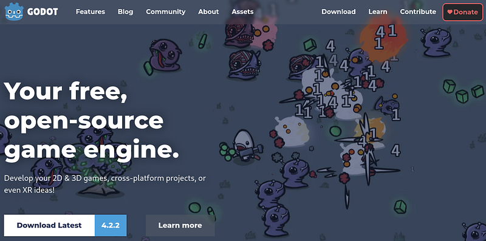
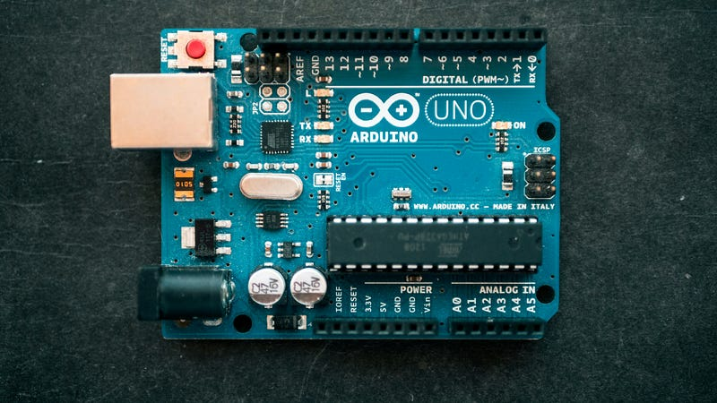
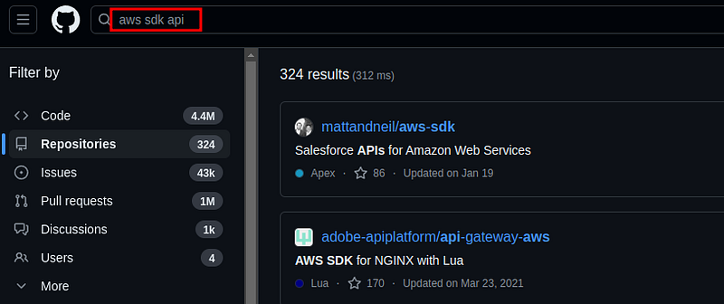

If you have been coding for a while, it is likely you have coded in an SDK. They are everywhere. There are so many out there they are impossible to avoid as a programmer.
Examples of SDKs include:
- Android SDK
- iOS SDK
- .NET SDK
- Java SDK
- Unity SDK
- Etc.
The goal of an SDK is to develop a specific application. Android SDK helps you create mobile apps. Java SDK helps you create Java applications. Unity SDK is all about game development.
They come with anything a programmer needs for that goal, be it an IDE, framework, software, tools, libraries, utilities. An SDK is a collection of tools and software meant to help you create an app.
An SDK is arbitrary. Any one can slap a playlist together of the best tools and call it an SDK.
There is nothing inherently special about a set of tools other than they are called a software kit.
That company or individual grouping the tools is in no way special. The individual tools of a software kit is still maintained by however made the tool.
You will see many SDKs out there for Unreal or Unity that group together existing tools under a brand name.
Inworld for example is a collection of tools a group of developers put together. The main tool of the SDK is Unreal Engine, but they add their own software and documentation to it.
They slap it together and call it Inworld Unreal SDK.
Bottom line, SDKs are arbitrary.
SDK vs Framework
In the past I called SDKs frameworks. If you have read my old blogs, just replace the word framework with SDK.
They are very similar, except a framework is a library or set of libraries purposed for some application. While an SDK is bigger than a framework. It can include multiple frameworks.
For example, the Unity SDK uses a large set of frameworks by developers outside their team. They use physics frameworks, rendering frameworks, audio frameworks, VR frameworks and others. They did not make everything from the ground up.

SDKs often use tools that already exist. And frameworks are re-used between SDKs. Game development SDKs commonly include OpenGL, Vulkan and DirectX. As another example machine learning SDKs would commonly include PyTorch, TensorFlow and CUDA libraries.
Why? Because they are the standard of the industry. Why would SDKs not include something like that.
Anyway, the difference between an SDK and a framework is SDKs include more. Frameworks are limited by their own function. While SDKs are groups of many software and tools.
Why learn an SDK
I consider SDKs the perfect goal for you. They literally define an entire niche into one kit of software.
Want to learn game development? Master the Unity SDK along with some art tools.
Want to learn mobile development? Master the Android SDK along with some art tools.
Cloud development? AWS SDK.
Really, when you start a niche you are basically making your own SDK.
Let's say you want to be a full-stack developer. You put together MongoDB, React, Java Spring, Node. We can call that your personal SDK.
It's a stack, I know. But its the same way people put together SDKs under a brand name. They simply stack together a bunch of tools and 3rd party software.
Why learn SDKs? You need a software kit for you to master. It is the best way to tackle programming. By limiting yourself to a set of tools for a specific type of application.
If no SDK fits exactly the application you want to create, just put together your own stack or software kit.
Goals of SDKs
There are many different applications an SDK may want to create. What is absolutely insane, SDKs can have hardware automation APIs, frameworks and tools. It is not just limited to software.
SDKs include hardware frameworks.
Cloud
An example of hardware frameworks are all the libraries included in AWS SDK, Google Cloud SDK or Azure SDK, etc. Cloud SDKs are meant to automate how you create a cloud system all from the code of your editor.
You can create remote instances of entire virtual machines. Automate a fleet of virtual machine across the globe, manage a load balancer, backup and duplicate a database, and so much more.
These cloud SDKs are meant to automate as much of the cloud as possible. And what is crazy, these SDKs are in different languages. You can use AWS SDK in Javascript, Java, Python, C#.
Just wow.
If you wanted to become a cloud engineer then making your own application using AWS SDK is the way to go.
There are over 300 individual tools on AWS and a majority of them have automation in the SDK.
General programming
General programming SDKs are like the Java SDK and .NET SDK. They exist as a standard for programming anything.
In these scenarios people use these SDKs to create 3rd party libraries and frameworks. We download the SDK and include those 3rd party libraries to fit our needs.
The difference between a general SDK and something like Python is our ability to choose.
Technically Python has a set of libraries which could be considered an SDK. But the creators of Python do not call their language tools an SDK. Instead they call Python an ecosystem.
Most languages are ecosystems. This means you piece together your own software kit via libraries. JavaScript and Python are perfect examples of ecosystems.
Basically you just put together your own set of software and tools based on the economy of software developers out there. That is an ecosystem, just all the tools everyone created. The economy of libraries we developers made.
Operating System
All Windows software uses the Windows SDK down the stack. Actually these days all software uses their respective operating system software to perform tasks.
It is the entire reason why we limit software to one operating system. The OS is the intermediary between your software and your hardware.
For this reason Operating System SDKs are extremely cool. They are how all applications are made from Desktop applications to hardware drivers.
You are using the operating system itself to perform some task. Yes, it is locked into that operating system. And also the SDK has limitations set by the vendor.
Microsoft for example limits what you can do with the Windows SDK on purpose.
But these operating systems software allow enough to create just about anything.
Game development
If you wanted a full stack of tools for making video games, this is it. Unity, Unreal, Godot, etc. are so comprehensive they are considered their own SDK.
Though not officially SDKs, they are a collection of tools meant for creating video games.
As a niche you should pick one of these SDKs and stick to them. Though with these SDKs I would not consider them pure programming.
Game development nowadays has been abstracted so much the skillset you need is entirely different than pure programming. You are the artist, programmer and engine user.
That is what it takes to learn these SDKs and pump out video game projects. We need to learn the SDK.
I will always repeat, you will have to create your own art.
Hardware
Just like Cloud SDKs, there are hardware SDKs specifically built for a device. This would include Arduino SDK, Fitbit SDK, Android SDK, VR SDKs, NVIDIA SDKs and many others.
These exist to control the software already on the device. If you wanted to be an embedded systems engineer then these types of SDKs are what you would be using.
Others
Other SDKs include social media SDKs, like the Facebook SDK, Instagram SDK. They include payment and analytics SDKs, which are really APIs but these companies call them SDKs-Stripe, PayPal, Google Analytics.
They are used to automate features of their platform. For example, you can programmatically control your Instagram account.
There is nothing inherently special about these other than what they are used for. They are specific to whatever the company or individual wants.
How to learn an SDK
First and foremost, we need to accept SDKs as they are. Unity for example has a large set of tools that frankly, we are stuck with. Within our chosen SDK we have to accept what we are given.
We shouldn't complain. If you want to make a video game or cloud system or whichever application, this is what we are given.
Many developers start learning an SDK and quit in the middle of their learning because this SDK does not fit me. Here is the reality, none of these SDKs will fit your preferences.
They exist to create the application not suite your sensibilities. Unity does not include a lot of graphics programming. Many developers hate that. But what are we doing here? Are we working on graphics or creating video games?
We are creating video games, if you want to make graphics go learn OpenGL...
What?
It is too slow to create video games with?
Huh... How about that? Sounds like you need an SDK.
You get the picture?
You must accept what the SDK is. It is for that specific type of application.
After accepting the SDK then we should stick to it and learn the niche for which it was created.
An SDK as a framework
With this acceptance we are invoking an inversion of control. We give control to the SDK and we get more productivity for that exchange.
If you wanted to include a cube in a rendering window in Unity you drag and click an object.
If you wanted to include a cube in OpenGL, you have to write 300 lines of code over a period of 3 hours.
One is about 15 seconds and the other is about 3 hours. The exchange is done by passing control to the Unity SDK.
This is why we must accept the tools that are given in the methodology they were given.
Because they are specifically built to create what we are doing.
This example is the same for pure code SDKs as well. Unity is just a very easy example to make a story from.
Use an example repository
For every SDK you should start with an example project.
If you are learning AWS SDK then download a project similar to what you are creating.
You can look on GitHub:
You can open up the code or project then see how everything is written out. Your goal is to read and learn how it is done in a bigger project.
Use your LLM
LLMs have a surprisingly comprehensive knowledge of most SDKs. You can ask many questions of them and learn how to code quite a bit.
Three of the best ways to learn SDKs with an LLM are:
- Ask about core concepts of the SDK
- Prompt the LLM to create a snippet
- Ask it what a snippet means
An example repository and LLM are an amazing combination.
Use a Udemy course
Typical stuff, but worth repeating. Many SDKs have entire Udemy courses dedicated to it.
It is a good idea to go through a few courses and start learning to learn on your own.
My only concern with Udemy courses is you become dependent on them for learning.
You don't really learn to learn on your own. Just know once the Udemy courses run out you will have to learn to live without them.
It is grievous but you must endure and keep learning the SDK.
Anywho, I hope you learned something...
CTA: Check out my book on learning code
Happy coding!
Resources
What is a cloud: What Is a Cloud System? Why Is It Useful and Awesome?
6 rules to follow: 6 Easy Rules Programmers Should Follow to Learn to Code Faster